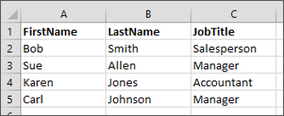

Skill Exercise: Datasource Objects
|
|
Exercise
|
Performance Tasks |
Instructions
Complete the following tasks:
- Create an Excel spreadsheet with one worksheet, and name the worksheet "Personnel".
- In the worksheet, create an excel table that looks like the following:

- Create a Datasource the points to the Process Director internal database.
- Import the Excel spreadsheet into Process Director and import the data.
- Set the Excel spreadheet's properties in Process Director to re-import the data when the spreadsheet is checked in.
- Check out the spreadsheet and add a new row to the data.
- Check the spreadsheet back in, and confirm that the new data was imported.